MAPLE BAR · PATCH NOTES
메이플 바 패치 노트
재획하면서 자주 쓰는 알림과 사이트를 메이플 화면 위에 모아 보여 주는 프로그램이에요. 버전마다 무엇이 바뀌었는지 정리했어요.
MapleBar-Setup-1.1.32.exe · 약 49MB · 누르면 바로 받아져요
 오늘 / 전체
오늘 / 전체
업데이트하는 방법
- 1.0.8부터: 켤 때 새 버전 안내가 뜨면 [예]나 [확인]만 누르세요. 알아서 설치하고 다시 켜져요.
- 1.0.7 이하: 이번 한 번만 설치 파일을 받아 설치해 주세요.
- 설치할 때 "Windows의 PC 보호" 창이 뜨면 [추가 정보] → [실행]을 누르세요.
주요 기능
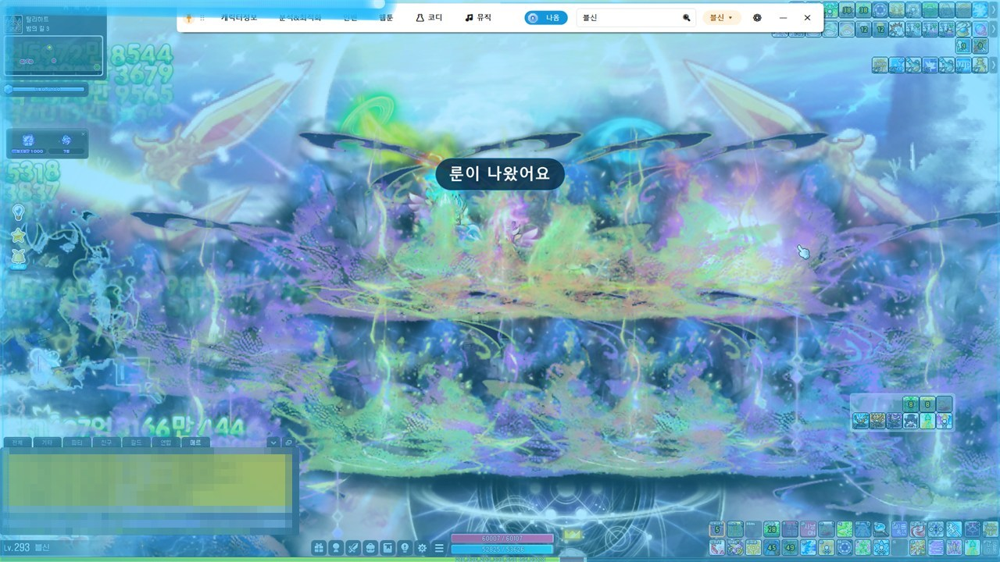
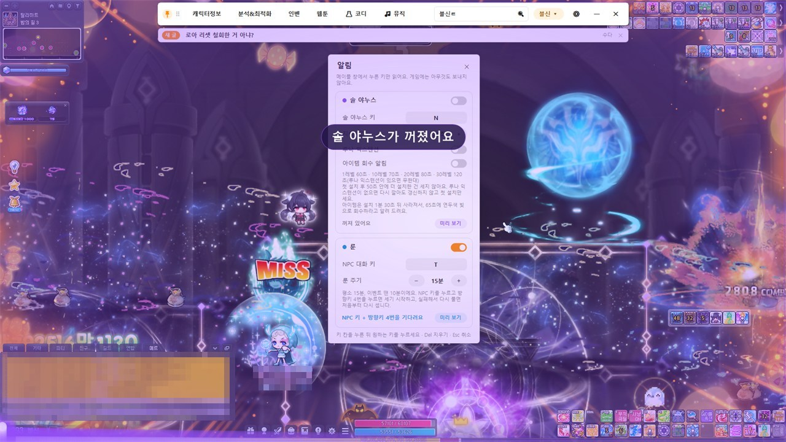
룬 · 솔 야누스 · 아이템 회수 알림
- 룬이 나올 때가 되면 화면 가운데에 알려 줘요 (지금은 "룬이 곧 나와요"로 떠요)
- 솔 야누스가 사라질 때는 보라색, 아이템을 회수할 때는 초록색으로 알려 줘요
- 메이플 창에서 누른 키만 읽어요. 게임에는 아무것도 보내지 않아요
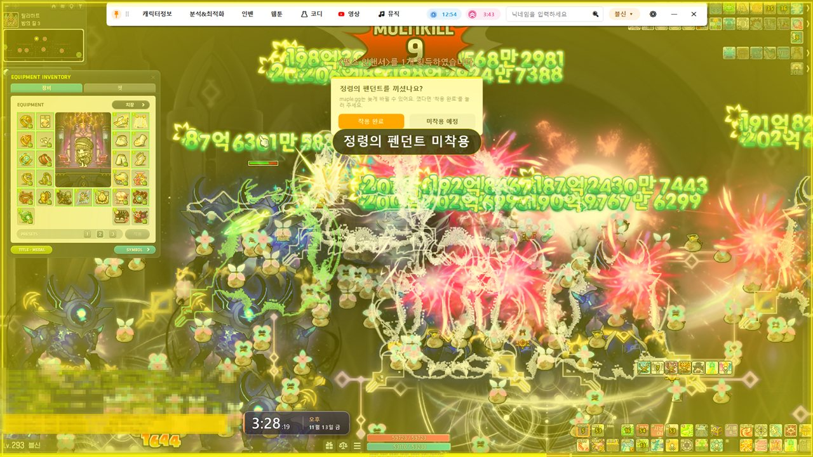
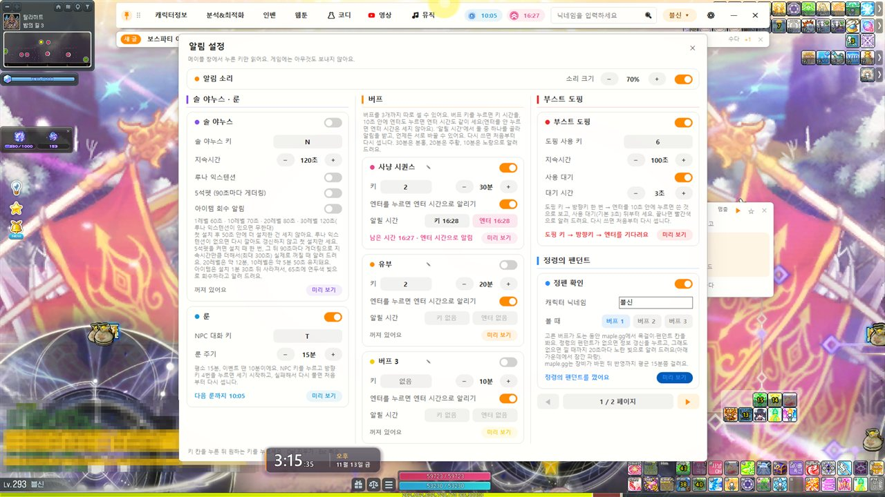
정령의 펜던트 확인
- 고른 버프가 도는 동안 maple.gg에서 목걸이를 확인해요
- 정령의 펜던트를 안 꼈으면 20초마다 노란 빛으로 알려 줘요
- 꼈다면 [착용 완료], 안 낄 거면 [미착용 예정]을 누르세요
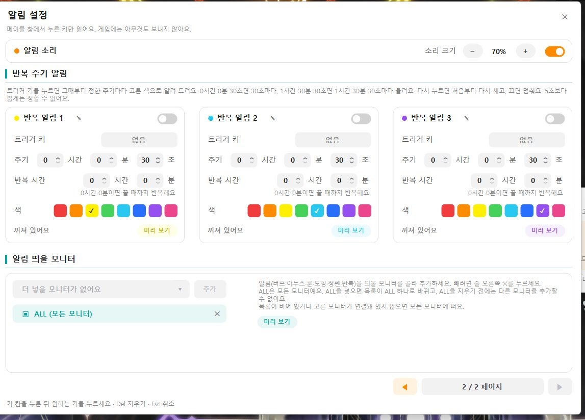
반복 주기 알림 · 알림 모니터
- 키를 누르면 그때부터 정한 주기마다 고른 색으로 알려 줘요 (3개까지)
- 알림 이름을 바꿀 수 있고, 얼마 동안 반복할지도 정해요
- 알림을 띄울 모니터를 고를 수 있어요
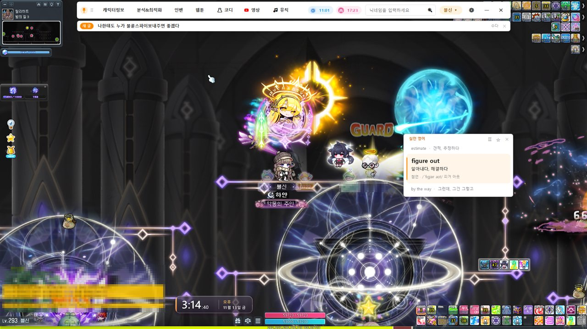
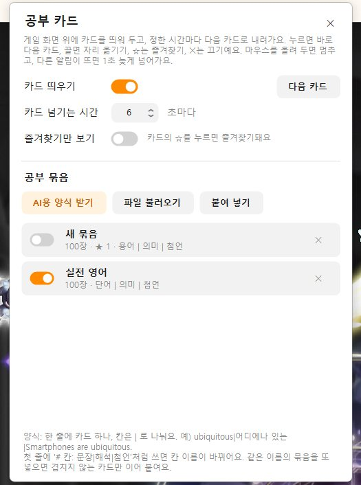
자기계발 카드
- 게임 화면 위에 카드를 띄우고, 정한 시간마다 다음 카드로 넘어가요
- 카드의 ☆을 누르면 즐겨찾기, 즐겨찾기만 볼 수도 있어요
- 파일이나 붙여 넣기로 공부 묶음을 넣어요. AI에 줄 양식도 받을 수 있어요
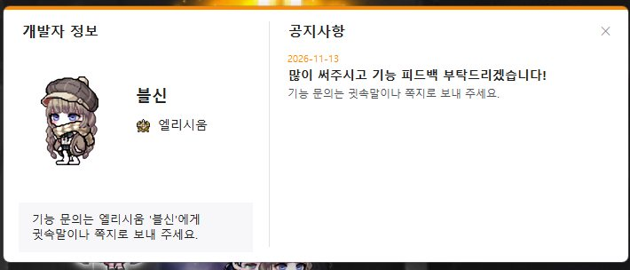
개발자 정보 · 공지사항
바 메뉴 맨 아래 [개발자 정보]에서 개발자 캐릭터와 공지를 볼 수 있어요.
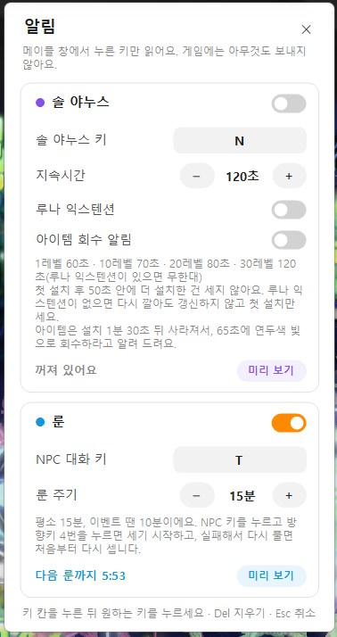
알림 설정
- 솔 야누스 키와 지속시간, 루나 익스텐션, 아이템 회수 알림을 정해요
- 룬은 NPC 대화 키와 주기(평소 15분, 이벤트 땐 10분)를 정해요
- [미리 보기]로 알림이 어떻게 뜨는지 바로 볼 수 있어요
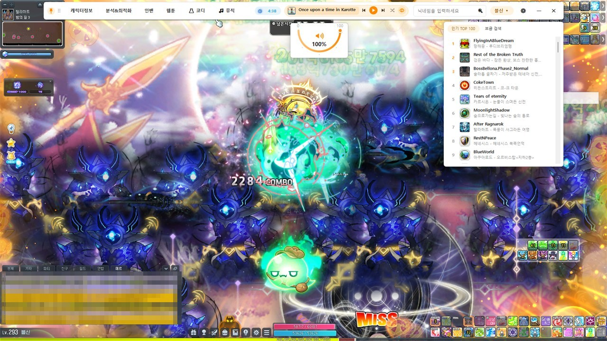
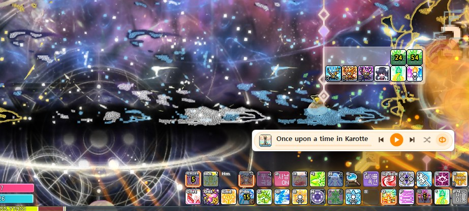
메이플 BGM 듣기
- 인기 BGM 목록에서 고르거나 검색해서 들어요
- 플레이어를 바에서 끌어 내면 원하는 곳에 둘 수 있어요
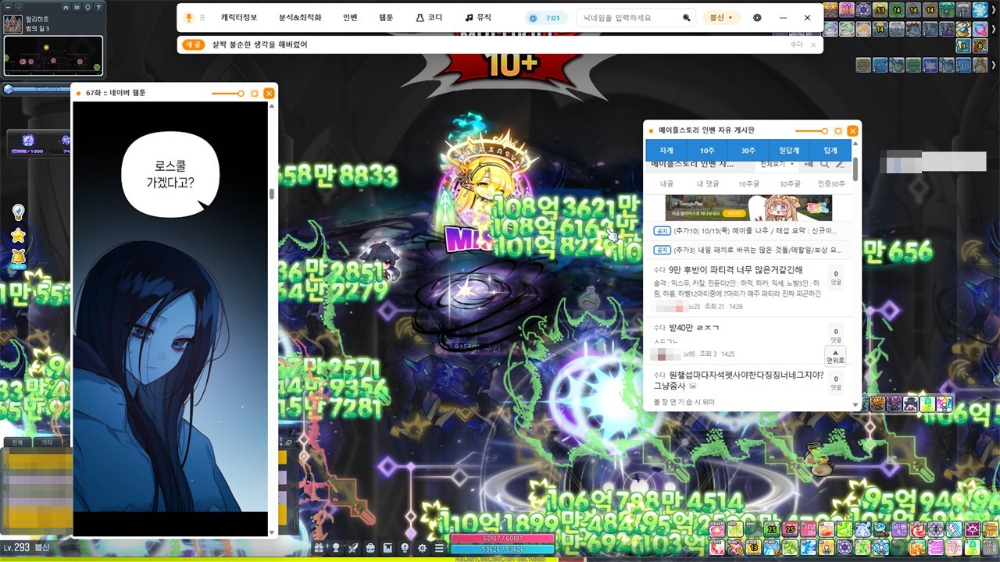
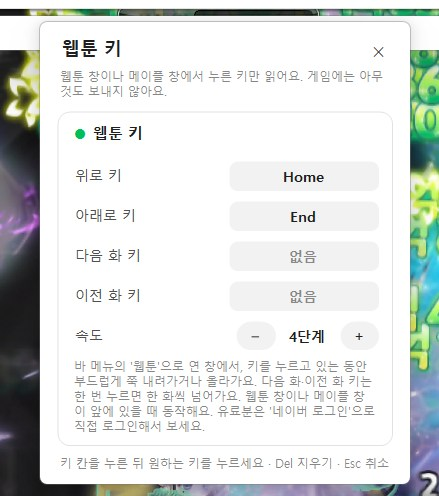
인벤 · 웹툰 보기
- 인벤 자유게시판과 네이버 웹툰을 게임 화면 위 창으로 봐요
- 웹툰은 키를 누르고 있으면 부드럽게 스크롤돼요. 마우스를 쓰지 않아도 돼요
- 다음 화 · 이전 화 키도 정할 수 있어요 (쇼츠 키도 같은 창에서 정해요)
- 창 위 막대로 투명도를 조절할 수 있어요
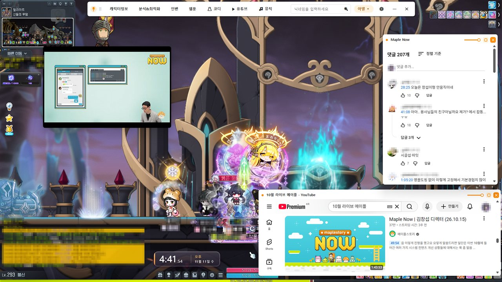
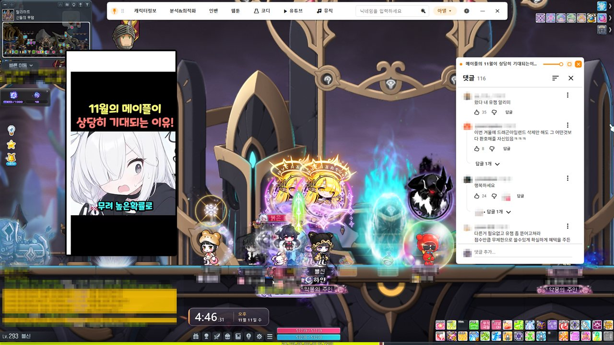
유튜브 · 쇼츠 보기
- 유튜브 목록 창에서 영상이나 쇼츠를 고르면 영상만 있는 창으로 떠요
- [댓글] 버튼을 누르면 댓글을 옆 창으로 따로 볼 수 있어요
- 쇼츠는 키로 다음·이전을 넘겨요. 넘기면 댓글도 같이 넘어가요
- 창 크기와 위치는 마음대로 바꿀 수 있어요
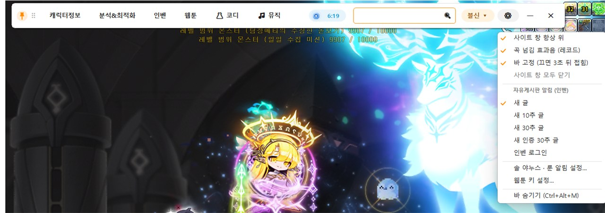
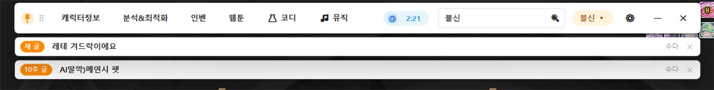
인벤 자유게시판 구독
- 설정 메뉴에서 받고 싶은 글을 골라요 (새 글, 10추 글, 30추 글, 인증 30추 글)
- 고른 글이 올라오면 바 아래에 알림이 떠요
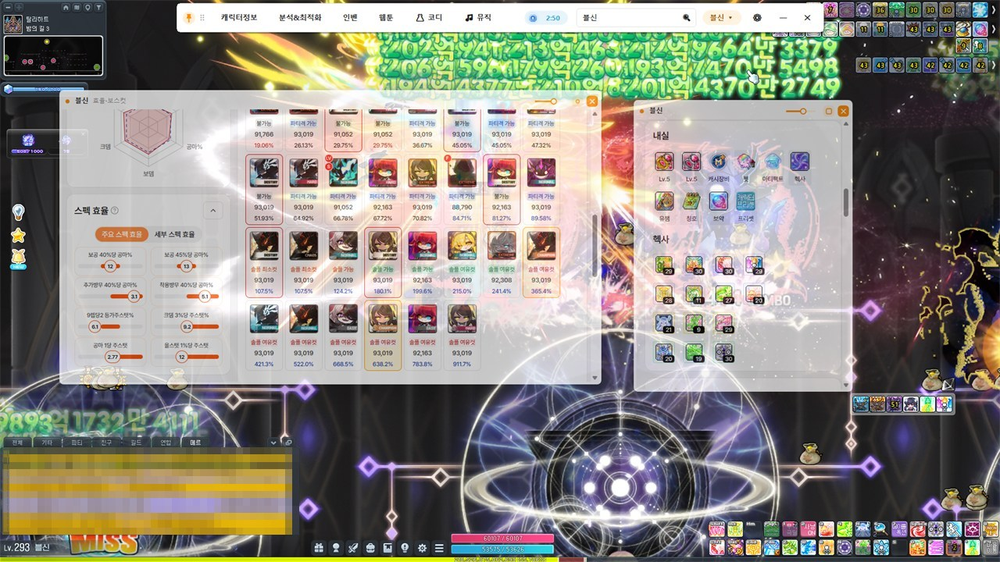
캐릭터 정보 · 분석
캐릭터 이름을 검색하면 스펙과 환산 주스탯 같은 정보를 창으로 띄워 볼 수 있어요.
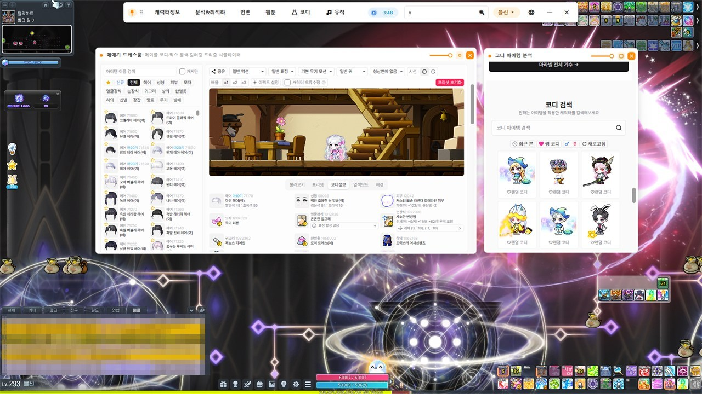
코디
메애기 사이트를 게임 위에 띄워 코디를 맞춰 보거나 다른 캐릭터의 코디를 검색할 수 있어요.
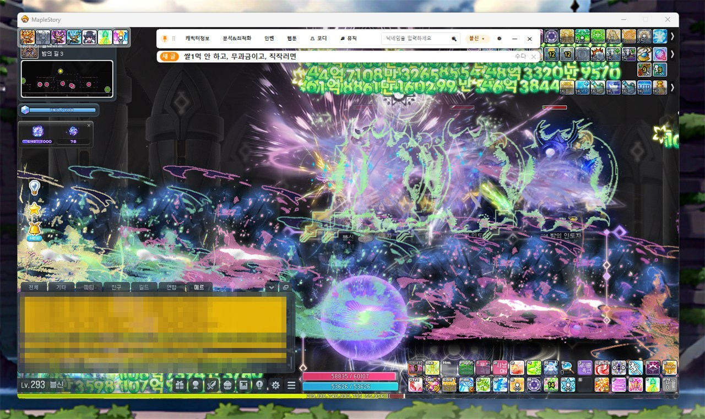
메이플 창 크기 따라가기
메이플 해상도나 창 크기가 바뀌면 바도 그 크기에 맞춰 따라가요.
업데이트 내역
최신 버전부터 순서대로 적었어요.
1.1.322026.11.14최신
도핑 3칸과 AI 대화
새 기능
- 부스트 도핑을 빨강 · 갈색 · 분홍 3칸으로 따로 셀 수 있어요. 칸마다 이름도 붙일 수 있어요
- 사이트 메뉴에 AI를 넣었어요. ChatGPT · Claude를 작은 창에서 써요
- 자기계발 카드 설정에서 ChatGPT · Claude 창을 바로 열 수 있어요
- 개발자 정보에서 패치 이력을 버전별로 골라 볼 수 있어요
바뀐 점
- 알림 설정의 버프 · 도핑 칸을 ◀ ▶로 한 칸씩 넘겨 봐요
- 영상과 메이플 뮤직을 영상&음악 메뉴 하나로 합쳤어요
- 사이트 창을 닫은 자리를 기억해서 다음에 같은 자리에 열어요
- Alt+Tab 목록에 메이플 바가 나오지 않게 했어요
- 설정 톱니 모양을 바꾸고, 패치노트 창은 Esc · Ctrl+W로 닫혀요
바뀐 점
- 공부 카드 이름을 자기계발 카드로 바꿨어요
- 새 버전 알림 버튼을 [확인] · [취소]로 바꿨어요
1.1.32026.11.13
정펜 확인과 자기계발 카드
새 기능
- 정령의 펜던트 확인: 고른 버프가 도는 동안 정펜을 안 꼈으면 20초마다 알려 줘요
- 반복 주기 알림: 키를 누르면 정한 주기마다 고른 색으로 알려 줘요 (3개까지)
- 알림 띄울 모니터: 알림이 뜰 모니터를 고를 수 있어요
- 자기계발 카드: 게임 화면 위에 단어 카드를 띄워 공부할 수 있어요
- 개발자 정보: 바 메뉴 맨 아래에서 공지를 볼 수 있어요
- 버프 시간을 키를 누른 때부터 셀지, 엔터를 누른 때부터 셀지 고를 수 있어요
바뀐 점
- 알림 설정을 두 쪽으로 나눴어요
- 숫자 칸을 화살표·휠·직접 입력으로 바꿀 수 있어요
- 유튜브 창에 영상만 보이게 했어요
- 켜지는 속도와 움직임을 가볍게 하고, 설정이 깨지지 않게 저장해요
1.1.22026.11.12
브금 목록과 업데이트 창
새 기능
- 브금 즐겨찾기: 마음에 드는 곡을 즐겨찾기에 넣고 바로 틀 수 있어요
- 브금 목록 창을 끌어서 원하는 곳에 둘 수 있어요
- 업데이트 창: 새 버전을 받는 동안 진행 막대가 보이고, 바뀐 점도 바로 볼 수 있어요
바뀐 점
- 바의 뮤직 칸을 작게 줄였어요. 곡 이름은 칸에 마우스를 올리면 보여요
- 곡이 바뀐 뒤 소리가 안 나던 문제를 고쳤어요
- 브금 목록을 내릴 때 버벅이던 문제를 고쳤어요
- 게임 해상도를 바꿔도 듣던 음악과 열어 둔 창이 그대로 남아요
- 바 가운데에 빈칸이 크게 남던 문제를 고쳤어요
1.1.12026.11.12
넥슨 라이브 재생 창 정리
바뀐 점
- 넥슨 라이브 창 아래에 재생 바를 한 줄로 모았어요. 왼쪽부터 영상 길이, 소리, 배속, 설정 순서예요
- 영상을 가리던 큰 버튼은 빼고, 창 높이를 영상에 맞췄어요
1.1.02026.11.12
실시간 방송 보기
새 기능
- 실시간 방송: '영상' 메뉴에서 SOOP·치지직을 열 수 있어요. 방송을 누르면 영상만 보이는 작은 창으로 떠요
- SOOP은 영상과 채팅이 한 창에 같이 떠요. 제목 줄의 '채팅' 버튼으로 채팅을 숨기거나 다시 보여 줘요
- 치지직은 '채팅' 버튼을 누르면 채팅 창이 따로 떠요. 후원 순위 같은 칸은 빼고 채팅만 보여 줘요
- 치지직의 '확장 프로그램 설치' 안내는 알아서 '설치 없이 일반 화질 시청'을 눌러 줘요
바뀐 점
- 바 메뉴 '유튜브'가 '영상'으로 바뀌었어요. 유튜브·유튜브 뮤직·실시간 방송이 이 안에 있어요
- '웹툰 키 설정'이 '웹툰·쇼츠 키 설정'으로 이름이 바뀌었어요
1.0.912026.11.11
유튜브 뮤직 · 가사 보기
새 기능
- 유튜브 뮤직: 유튜브 메뉴에서 유튜브 뮤직을 열면 바의 음악 칸으로 재생·이전·다음·볼륨을 다룰 수 있어요. 뮤직 창은 뒤에 숨어 있고, 음악 칸을 눌렀을 때만 떠요
- 가사 보기: 음악 칸 아래에 가사 카드가 떠요. 시간이 맞춰진 가사는 지금 부르는 줄을 주황색으로 보여 주고, 아니면 곡 진행에 맞춰 알아서 넘어가요. 휠로 직접 넘기면 잠시 멈춰요
- 웹 창 가장자리를 끌어서 크기를 바꿀 수 있어요
바뀐 점
- 음악 칸과 떠 있는 음악 카드 디자인을 깔끔하게 바꿨어요 (둥근 표지, 제목·가수 두 줄)
- '유튜브'를 누르면 유튜브 첫 화면이 열려요. 유튜브 아이콘이 빨간색이 됐어요
- 웹툰 키와 쇼츠 키를 따로 정할 수 있어요
- 크게 보기는 영상만 크게 보여 주고, 반투명 밝기도 조절돼요
1.0.822026.11.11
키 설정 수정 · 켜진 채로 업데이트 알림
새 기능
- 켜 둔 채로 새 버전 알림: 새 버전이 나오면 화면 오른쪽 아래에 물어봐요. Yes를 누르면 업데이트하고 다시 켜지고, No를 누르면 다음에 켤 때 업데이트해요
바뀐 점
- 한글 입력 상태에서 키를 정하면 'ProcessKey'로 나오던 문제를 고쳤어요. 이제 누른 키(예: T) 그대로 저장돼요
- 룬·야누스 키를 Alt(또는 Shift·Ctrl)로 정하면 인식되지 않던 문제를 고쳤어요
1.0.812026.11.11
쇼츠 화면 위치 수정
바뀐 점
- 쇼츠 영상이 창 오른쪽 아래로 밀려 보이던 문제를 고쳤어요. 이제 창에 꽉 차게 보여요
1.0.82026.11.11
앱 안에서 바로 업데이트
새 기능
- [예]만 누르면 업데이트돼요
- 새 버전이 나오면 켤 때 안내 창이 떠요
- [예]를 누르면 받는 과정이 막대로 보여요
- 받은 파일이 원본과 같은지 확인한 뒤에만 설치해요
- 설치 창 없이 조용히 설치하고, 1분쯤 뒤 메이플 바가 다시 켜져요
- 받기에 실패하면 브라우저로 설치 파일을 받을지 물어봐요
새 기능
- 유튜브를 메이플 바 안에서 봐요
- 목록 창에서 영상이나 쇼츠를 고르면 영상만 있는 창으로 떠요
- 창 크기는 마음대로 바꿀 수 있어요
- 마우스를 창 위쪽에 올리면 제목 줄이 나와요 (옮기기·닫기)
- 쇼츠 다음·이전 키
- 웹툰 설정 창에서 같이 정해요
- 게임을 하는 중에도 키로 넘길 수 있어요
- 댓글 창
- [댓글] 버튼을 누르면 댓글만 따로 창으로 보여요
- 쇼츠를 넘기면 댓글도 같이 넘어가요
- 영상 창과 댓글 창 중 하나를 닫으면 둘 다 닫혀요
바뀐 점
- 알림 설정 창을 3칸으로 넓혀서 작은 화면에서도 아래가 잘리지 않아요
- 속도와 안정성을 높였어요 (보이는 변화는 없어요)
1.0.62026.11.11
시계와 버프 3칸
새 기능
- 시계가 추가됐어요 (테두리 있는 굵은 숫자라 게임 화면 위에서도 잘 보여요)
- 버프 알림을 3개까지 따로 써요
- 기본은 30분, 20분, 10분이에요
- 칸마다 켜기/끄기, 키, 시간, 이름을 정할 수 있어요
- 칸마다 "키 + Enter"로 셀지도 고를 수 있어요
- 예전 버프 설정은 처음 켤 때 첫 칸으로 옮겨져요
바뀐 점
- 알림 설정을 넓은 창 하나로 합쳤어요 (솔 야누스·룬 / 버프·도핑)
- 창이 화면보다 크면 화면에 맞추고 스크롤로 보여요
- 설치 파일을 깃허브가 공개된 코드로 직접 만들어요. 파일 확인용 SHA256 값도 함께 올라가요
1.0.52026.11.10
도핑 알림, 트레이 아이콘, 자동 실행
알림
- 부스트 도핑 알림
- 도핑 키 → 방향키 한 번 → Enter 순서로 누르면 쓴 것으로 보고 시간을 세요
- 끝나면 빨간색 알림으로 알려 줘요
- 사용 대기 시간(기본 3초)은 켜고 끄거나 바꿀 수 있어요
- 모든 모니터에 알림: 야누스, 아이템 회수, 룬, 버프 알림이 모든 모니터에 떠요
- 알림 소리: 소리를 켜고 끄고, 크기를 조절할 수 있어요
- 바를 숨겨도 알림: 숨기거나 최소화해도 야누스·룬·버프·도핑 알림이 떠요 (메뉴에서 끌 수 있어요)
- 인벤 새 글 알림은 게임 화면 위 가운데에 떠요
- 바를 숨겨 둔 동안에도 키를 누르면 시간을 세요. 다시 꺼내면 남은 시간이 그대로 보여요
켜기 · 숨기기
- 트레이 아이콘: 화면 오른쪽 아래 아이콘을 두 번 누르면 바를 열고 숨겨요 (Ctrl+Alt+M과 같아요)
- 게임에 맞춰 보이기: 게임을 켜면 바가 나타나고, 끄면 숨어요. 나타날 때 게임 키 입력을 빼앗지 않아요
- PC 켤 때 자동 실행: 메뉴에서 켜고 끄며, 켜 두면 아이콘으로 조용히 시작해요
- 이미 켜져 있을 때 다시 실행하면 숨어 있던 바가 앞으로 나와요
- 바를 처음 숨길 때 다시 여는 방법을 한 번 알려 줘요
바뀐 점
- 키를 빠르게 연달아 눌러도 놓치지 않아요. "버프 키 + Enter"를 더 정확하게 알아들어요
- 낮은 해상도에서 바와 글자가 너무 작아지지 않아요
- 사이트 창이 너무 작아지지 않게 최소 크기를 정했어요
- 새 버전이 나오면 알려 줘요
- 프로그램을 지울 때 자동 실행 설정도 함께 지워져요